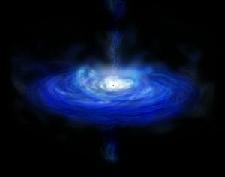
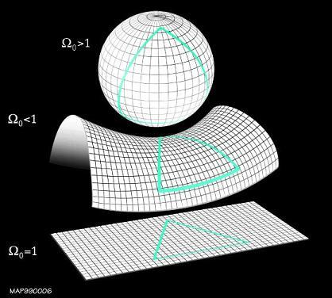

Time Travel
Cosmology
The Universe And All the Stuff In It

The universe: it's the biggest place we know...so far. As if that's not enough to wonder, new theories exist that ponder multi or parallel universes. How dare those scientists? We haven't grasped our own universe yet alone a bunch of others.
Pondering the universe is about asking all the big questions. How did life begin? How big is the universe? How did we get here? Where are we going? Is the moon really made of cheese?
We've pretty much answered the last question, with the exception that some scientists say provolone while others say Swiss.
The universe, usually represented by a night sky full of stars, is the stuff of a kid looking through a telescope for the first time. Or, maybe its the stuff of a camping trip, when everyone's mouths fall open when they see a shooting star at the same time.
It's also the stuff of culture and folklore, from The Hitchhiker's Guide to the Galaxy to Star Wars, from Carl Sagan's Cosmos to Stephen Hawking's, A Brief History of Time.
What Is Cosmology?
Cosmology is the study of the origin, evolution, structure, composition and fate of the Universe as a whole. Human kind has sought to understand the origins and nature of the universe since ancient times. In ancient times, it was thought that the Universe had existed forever, with the earth at its center. Some ancient countries got more specific and claimed their capital city was the center of the Universe.
A few years later (as long as we're thinking big) Copernicus (1473-1543) declared the Sun was the center of the Universe, and became an outcast. In the 21st century, based on what is known as the Cosmological Principle, the Universe has no center.
The Cosmological Principle makes two claims. One, is the Universe is homogeneous, meaning all the "stuff" is evenly distributed. And, two, the Universe is isotropic, meaning, wherever you are in the Universe, all directions look the same. In space, there is no up or down or left and right.
If that's not enough to warp your own sense of place, it was Einstein's Theory of Relativity that changed cosmology by not allowing the Universe to be static. Instead, the Universe must change with time.
Theorists offer three views of the Shape of the Universe (illustrated by the graphic below):

[Possible space curvatures of the universe: open, closed and flat]
So far, cosmology doesn't have a whole lot of practical value. Ironically, cosmologists like Stephen Hawkings and others (Einstein was a cosmologist) are considered so smart they're from another planet...pun intended.
Outside of awe and wonder, most people just don't understand this thing called the universe, at least not scientifically. The term is used metaphorically, like "your universe or my universe," or in conversations about altruistic things like universal love and peace. But outside of a sky that's blue, funny shaped clouds, and lots of glitter in the sky at night, the dimensions and nature of the universe is pretty much outside of most people's grasp.
Mathematics and theoretical physics have always sent a chilling shiver up and down the cultural spine. Physics people are nerds. Everybody knows they're smart, but that doesn't stop them from being the brunt of jokes.
Well, societyglobal societyhas a way of marginalizing people and things it doesn't understand. We have a way of dividing ourselves into groups, like Haves and Have Nots, foreign and American, rich and poor, young and old. Living in our own little worlds, we can be blind to the universe that surrounds usthe universe we are all a part of.
Yet, cosmological influence on our lives is unmistakable. Even gradeschoolers have some concept of the planets, the Milky Way, man on the moon and even the term "black hole" has entered everyday conversations about our place in the scheme of things.
We have become much more aware of our position within the galaxy and solar system, and pretty much accept the premise there are many more galaxies than our own.
We have a better grasp on the notion that the Earth...is our home. Speaking of galaxies, thanks to plenty of Hollywood movies and sci-fi novels, we anxiously await to meet whoever it is that "lives next door," so to speak.
Big Bang
The Big Bang theory is somewhat understandable in a cartoonish sort of way. There was this explosion and the earth was born. However, this is one of the biggest myths of what the Big Bang Theory is about. It did not occur at a single point in space as an "explosion. More so, it describes the simultaneous appearance of space everywhere in the universe. What adds to the confusion of understanding such a concept is that based on space as we know it being infinite, it is then assumed the universe was born infinite. It will take a few mathematical equations and a good-sized telescope to get a better grasp of that one.
Itmeaning the universehappened a few billion years ago: ~13.7 billion, according to the Wilkinson Microwave Anisotropy Probe (WMAP).
WMAP is a NASA satellite designed to survey the sky and measure the temperature of the radiant heat left over from the Big Bang, initially launched in 2001. WMAP has made the first detailed full-sky map of the oldest light in the universe, affectionately referred to as a "baby picture" of the universe.
The Big Bang theory tries to explain the origin and evolution of our universe. It started out as a small point (but again, not due to an explosion), only a few millimeters across. From there it has expanded from a hot dense state into the vast and much cooler cosmos we currently live in. Remnants of this hot dense matter are now visible by microwave detectors as very cold cosmic microwave background radiation seen as a uniform glow across the entire sky.
Cosmology sure makes you think big.
And then, there is the Christian belief that God created the universe in just 6 days.
Cosmological Stuff
A major area of cosmology is the study of Galaxies, called the "building blocks" of the universe. A galaxy is a huge collection of stars (about 100 billion stars), with each galaxy appearing to be an "island" in the vastness of space. Our own Sun is part of a galaxy called the Milky Way.
Within the realm of galaxies and the shape and age of the Universe, other cosmological components are largely concerned with matter, dark matter, anti-matter, dark energy, gravity, radiation, quarks, neutrinos, black holes...and all the "stuff" we just haven't thought of yet. Oh yeahthere is also the concept of time.
H.G. Wells is well known for introducing the notion of time travel in 1895, in his book, The Time Machine. However, ancient mariners navigating by the stars, Mayan calendars and 21st century physicists like Stephen Hawkings have spent a lot of timethinking about timeand its relation to space.
Who, What, When, Where, How and Why
Further exploration drills down deeper--or perhaps better said, "expand"--on the theories, people and "stuff" of cosmology.
The Creation vs. Evolution debate tackles the "Who created the universe?" question.
What Is the Universe and What Is the Shape of Universe? What does the universe consist of and is it flat, round or another shape? When Did the Universe Begin? How old is the universe and is it dying or expanding? Where Is the Universe? Is there only one universe or multiple universes or parallel universes? How Did the Universe Begin and How Big Is It? What is the Big Bang? Why Does the Universe Exist? Are we here on Planet Earth for our own amusement? What is fate?
What is the relationship of Cosmology and Physics, Cosmology and Astrophysics and Cosmology and Astronomy?
Galaxies are more than just clumps of stars. What are galaxies? How are they formed? What are quasars, black holes, pulsars, quarks and supernovae?
Is there more to our universe than space and time?
What is the importance of clocks and calendars in our lives? How many atomic clocks are there and how accurate are they?
What is matter, anti-matter, dark matter, energy, dark energy, gravity, light, radiation?
Many cosmological theories abound: Is time travel possible? What is the theory of relativity? What about String, Unified, Electro-Magnetic, Multiverse, Steady State, Inflation and Particle theories? What is the Cosmic Microwave Background Radiation? What Is Anisotropy?
Who are the people behind these cosmological theories, concepts and discoveries? What did the ancient Greeks, Romans, Egyptians and Mayans know that we don't know? Who are Ptolemy, Copernicus, Tycho Brahe, Galileo, Keppler, Newton, Wilhelm Bessel, Alexander Friedman, Hubble, Sagan and Hawkings? One special guy worth mentioning is Fred Hoyle. He coined the term "Big Bang."
^ Top ^